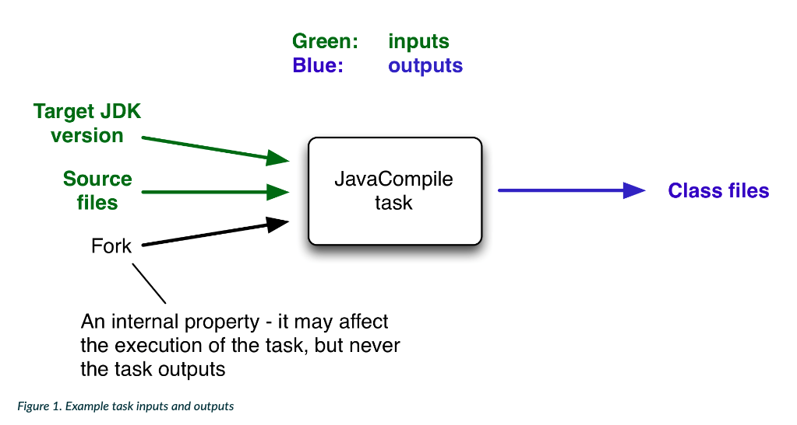

Project的构建逻辑是一系列Task组成，每个Task负责完成一个基本工作。在配置阶段，Gradle会根据Task的依赖关系构造一个有向无环图，以便在执行阶段按照依赖关系执行Task。
1.创建简单Task
通过task关键字：
task MyTask { //配置代码 }通过Project的TaskContainer属性也可以创建Task，分为热创建和懒创建：
① Task create(String name, Closure configureClosure)热创建：立即实例化Task对象；
② TaskProvider register(String name, Action<? super Task> configurationAction)懒创建：注册Task构造器，但不会实例化对象。创建Task操作会延迟到访问该Task时，例如通过TaskCollection#getByName(java.lang.String)，或者TaskProvider#get().
project.tasks.create(name: "MyTask") {
//配置代码
}
TaskContainer负责管理Task实例。以上方式创建的Task都会被加入TaskContainer中。
2.自定义Task
除了使用简单方式创建Task，我们还可以自定义Task类型。Gradle将这类Task称为增强Task。增强Task的可重用性更好，并且可以通过暴露属性的方式来定制Task的行为。
1.DefaultTask
自定义Task必须继承DefaultTask。class MyTask extends DefaultTask { final String message final int number }2.带参数创建Task
除了可以在创建Task后配置属性值，我们也可以在调用TaskContainer#create()时传递构造器参数。为了将值传递给任务构造器函数，必须使用@Inject注解修饰构造器。class MyTask extends DefaultTask { final String message final int number @Inject MyTask(String msg, int num) { this.message = msg this.number = num } }使用TaskContainer#create()创建如下：
//第二个参数为Task类型 tasks.register('myTask', MyTask, 'Hello', 29)3.获取已创建的Task
可以获取TaskContainer中已创建的任务，对于通过register注册的任务会在这个时机实例化。
Task getByName(String): 获取Task，如果不存在则抛出异常unknownTaskException；
Task findByName(String): 获取Task，如果Task不存在则返回null。
project.tasks.getByName("myTask")
4.设置Task属性
设置Task属性的语法主要有三种：
1.创建Task时设置
task MyTask(group: "MyGroup")2.通过setter方法设置
task MyTask { group = "MyGroup" // 等同于 setGroup("MyGroup") }3.通过ext额外属性设置: Task也支持与Project类似的额外属性。
task MyTask(group: "MyGroup") { ext.goods = 2 }Task常用的自有属性如下：
属性 描述 name Task标识符，定义Task时指定 group Task所属的组 description Task的描述信息 type Task类型，默认为DefaultTask actions 动作列表 dependsOn 依赖列表 Android Studio的Gradle面板会按照
group属性对Task进行分组显示。其中，Tasks组为Root Project中的Task，其它分组为各个Project中的Task，未指定group的Task会分配到other分组。
5.执行Task
- 1.命令行：gradlew :[模块名]:[任务名]。例如：gradlew -q :app:dependencies
- 2.IDE工具：通过IDE提供的用户界面工具执行，例如Gradle面板或者绿色三角形，支持普通执行和调试执行；
- 3.默认任务：通过Project#defaultTasks可以指定Project配置阶段的默认任务，在配置阶段会执行配置代码。
defaultTasks 'MyTask','HelloTask'
task MyTask(group:'MyTask') {
println "defaultTask MyTask"
}
task HelloTask(group:'MyTask') {
println "defaultTask HelloTask"
}
6.Task Action动作
每个Task内部都保持了一个Action列表actions，执行Task就是按照顺序执行这个列表，Action是比Task更细的代码单元。Task支持添加多个动作，提供了两种方法来添加Action：
- doFirst(Closure): 在Action列表头部添加一个Action
- doLast(Closure): 在Action列表末尾添加一个Action
task MyTask(group:'MyTask') {
println "defaultTask MyTask"
}
MyTask.doFirst {
println "MyTask doFirst"
}
MyTask.doLast {
println "MyTask doLast"
}
对于自定义Task，还可以通过@TaskAction注解添加默认Action。
class MyTask extends DefaultTask {
@TaskAction
def sayHello() {
println "MyTask hello"
}
}
7.跳过Task的执行
Gradle提供了多个方法来控制跳过Task的执行：
- onlyIf{}：闭包会在即将执行Task之前执行，闭包返回值决定了是否执行Task；
- enable属性：Task的enable属性默认为true，设置为false表示无效任务，不需要执行。
8.Task依赖关系
通过建立Task的依赖关系可以构建完整的Task有向无环图：
- dependsOn强依赖：Task通过dependsOn属性建立强依赖关系，可以直接通过dependsOn属性设置依赖列表，也可以通过dependsOn()方法添加一个依赖；
- 输入输出隐式依赖：通过建立Task之间的输入和输出关系，也会隐式建立依赖关系。
//MyTask依赖于[HelloTask, GreetTask]，执行MyTask前一定会执行HelloTask和GreetTask
task MyTask(group:'MyTask', dependsOn:[HelloTask, GreetTask]) {
println "defaultTask MyTask"
}
MyTask.dependsOn(HelloTask, GreetTask)
在某些情况下，控制两个任务的执行顺序非常有用，而不会在这些任务之间引入显示依赖关系，可以理解为弱依赖。任务排序和任务依赖关系之间的主要区别，排序规则不影响将执行哪些任务，只影响任务执行的顺序。
- mustRunAfter强制顺序：指定强制要求的任务执行属性；
- shouldRunAfter非强制顺序：指定非强制的任务执行顺序，在两种情况下会放弃此规则：1、改规则造成环形顺序；2、并行执行并且任务的所有依赖项都已经完成。
9.Gradle中的增量编译
在我们使用的各种工具中，为了提升工作效率，总会使用到各种各样的缓存技术。在Gradle中这种以task组合起来的构建工具也不例外。在Gradle中，这种技术叫做增量构建。这一特性能够节省大量构建时间。例如编译过源文件后就不应该重复编译，除非发生了影响输出的更改（例如修改或删除源文件）；
Gradle通过对比自从上一次构建之后，task的inputs和outputs是否变化，来决定是否跳过执行。如果相同，则Gradle认为task是最新的，从而会跳过执行。在Build Outputs中看到Task名称旁边出现UP-TO-DATE标志，就说明该Task是被跳过的。
那么在定义Task的输入输出时，要遵循一个原则：如果Task的一个属性会影响输出，那么应该将该属性注册为输入，否则会影响Task执行；相反如果Task的一个属性不会影响输出，那么不应该将该属性注册为输入，否则Task会在不必要时执行。
输入和输出
为了实现增量构建，gradle将每一个task都分为三部分，分别是input输入、任务本身和output输出。下图是一个典型的Java编译的task。

以上图为例，input就是目标JDK版本、源文件等，output就是编译出来的class文件。
增量构建的原理就是监听input的变化，只有input发生变化了，才重新执行task，否则gradle认为可以重用之前的执行结果。
自定义inputs和outputs
既然task中的input和output在增量构建中这么重要，我们需要了解如何在task中定义input和output。
如果我们自定义一个task，那么满足下面两点就可以使用上增量编译了：
- 需要为task中的inputs和outputs添加必要的getter方法；
- 为getter方法添加对应的注解。
Gradle支持三种主要的inputs和outputs类型：
1.简单类型：简单类型就是所有实现了Serializable接口的类型，比如String和数值。
2.文件类型：文件类型就是File或者FileCollection的衍生类型，或者其他可以作为参数传递给Project.file(java.lang.Object)和Project.files(java.lang.Object…)的类型。
3.嵌套类型：有些自定义类型，本身不属于前面的1和2两种类型，但是它内部含有嵌套的inputs和outputs属性，这样的类型叫做嵌套类型。
举个例子，如下：public class ProcessTemplates extends DefaultTask { private TemplateEngineType templateEngine; private FileCollection sourceFiles; private TemplateData templateData; private File outputDir; @Input public TemplateEngineType getTemplateEngine() { return this.templateEngine; } @InputFiles public FileCollection getSourceFiles() { return this.sourceFiles; } @Nested public TemplateData getTemplateData() { return this.templateData; } @OutputDirectory public File getOutputDir() { return this.outputDir; } // 上面四个属性的setter方法 @TaskAction public void processTemplates() { // ... } }上边的例子，我们定义了4个属性，分别为TemplateEngineType，FileCollection，TemplateData和File。前面三个属性是输入，后面一个属性是输出。
除了getter和setter方法之外，我们还需要在getter方法中添加相应的注解：@Input 、@InputFiles 、@Nested 和 @OutputDirectory，除此之外，我们还定义了一个 @TaskAction 表示这个task要做的工作。
这里的TemplateEngineType是一个枚举类，因为enum默认是实现Serializable的，所以这里可以作为@Input使用。
sourceFiles使用的是FileCollection，表示的是一系列文件的集合，所以可以使用@InputFiles。
为什么TemplateData是@Nested类型的呢？我们看下它的实现：public class TemplateData { private String name; private Map<String, String> variables; public TemplateData(String name, Map<String, String> variables) { this.name = name; this.variables = new HashMap<>(variables); } @Input public String getName() { return this.name; } @Input public Map<String, String> getVariables() { return this.variables; } }可以看到虽然TemplateData本身并不是File或者简单类型，但是它内部的属性是简单类型的，所以TemplateData本身可以看做是@Nested的。
使用了这些注解之后，gradle在构建的时候就会检测和上一次构建相比，这些属性有没有发送变化，如果没有发送变化，那么gradle将会直接使用上一次构建生成的缓存。
除了上述的4个注解，Gradle还提供其他几个注解，常用的注解如下：
- @InputFile：相当于File，表示单个input文件。
- @InputDirectory：相当于File，表示单个input目录。
- @OutputFile：相当于File，表示输出文件。
- @OutputFiles：相当于Map<String, File> 或者 Iterable
，表示输出文件。 - @OutputDirectories：相当于Map<String, File> 或者 Iterable
，表示输出文件。 - @Internal：内部属性，不是input也不是output。